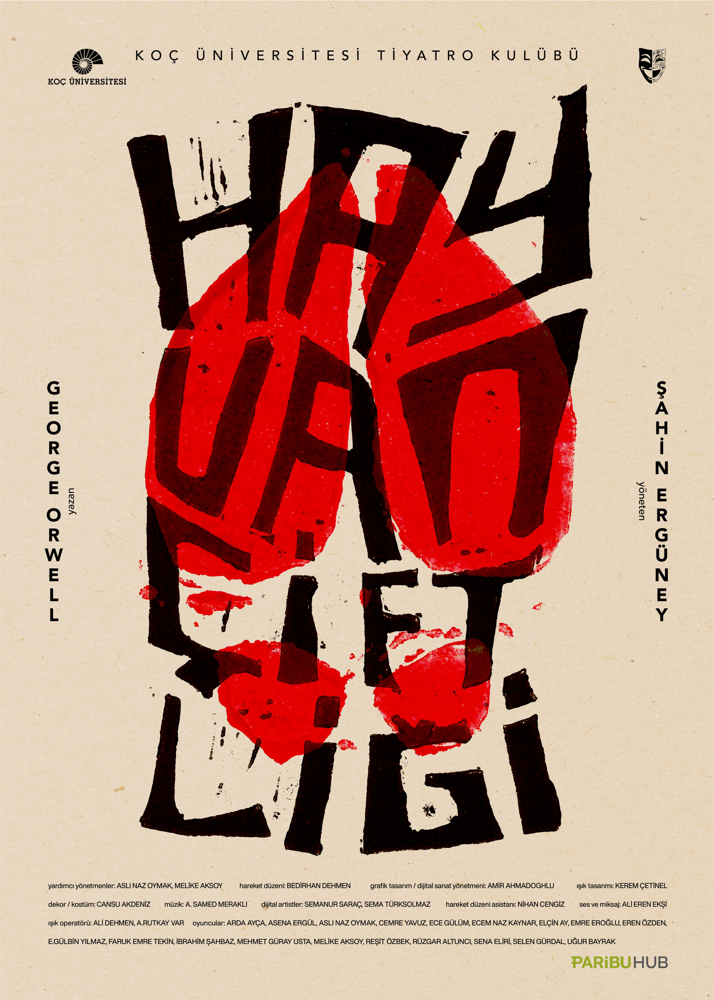

Hayvan Çiftliği
Karakterlerle Sohbet Et
George Orwell'ın dünyaca ünlü eserinin karakterleriyle konuşun, onların düşüncelerini öğrenin ve çiftlikteki olayları farklı perspektiflerden dinleyin.

George Orwell'ın dünyaca ünlü eserinin karakterleriyle konuşun, onların düşüncelerini öğrenin ve çiftlikteki olayları farklı perspektiflerden dinleyin.
